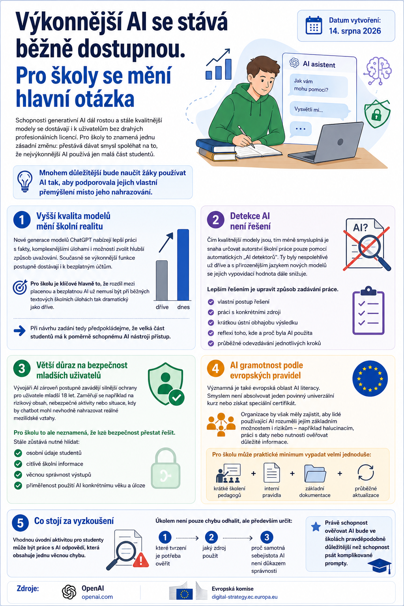

Schopnosti generativní AI dál rostou a stále kvalitnější modely se dostávají i k uživatelům bez drahých profesionálních licencí. Pro školy to znamená jednu zásadní změnu: přestává dávat smysl spoléhat na to, že nejvýkonnější AI používá jen malá část studentů.

Mnohem důležitější bude naučit žáky používat AI tak, aby podporovala jejich vlastní přemýšlení místo jeho nahrazování.
Vyšší kvalita modelů mění školní realitu
Nové generace modelů ChatGPT nabízejí lepší práci s fakty, komplexnějšími úlohami i možností zvolit hlubší způsob uvažování.
Současně se výkonnější funkce postupně dostávají i k bezplatným účtům.
To je pro školu podstatné především proto, že rozdíl mezi placenou a bezplatnou AI už nemusí být při běžných textových školních úlohách tak dramatický jako dříve.
Prakticky to znamená, že při návrhu zadání bychom měli předpokládat, že velká část studentů má k poměrně schopnému AI nástroji přístup.
Detekce AI není řešení
Čím kvalitnější modely jsou, tím méně smysluplná je snaha určovat autorství školní práce pouze pomocí automatických „AI detektorů“.
Ty byly nespolehlivé už dříve a s přirozenějším jazykem nových modelů se jejich vypovídací hodnota dále snižuje.
Lepším řešením je upravit způsob zadávání práce. Například požadovat:
- vlastní postup řešení,
- práci s konkrétními zdroji,
- krátkou ústní obhajobu výsledku,
- reflexi toho, kde a proč byla AI použita,
- průběžné odevzdávání jednotlivých kroků.
Větší důraz na bezpečnost mladších uživatelů
Vývojáři AI zároveň postupně zavádějí silnější ochrany pro uživatele mladší 18 let. Zaměřují se například na rizikový obsah, nebezpečné aktivity nebo situace, kdy by chatbot mohl nevhodně nahrazovat reálné mezilidské vztahy.
Je to pozitivní vývoj, ale pro školu neznamená, že lze bezpečnost přestat řešit.
Stále zůstává nutné hlídat:
- osobní údaje studentů,
- citlivé školní informace,
- věcnou správnost výstupů,
- přiměřenost použití AI konkrétnímu věku a úloze.
AI gramotnost podle evropských pravidel
Významná je také evropská oblast AI literacy. Smyslem není absolvovat jeden povinný univerzální kurz nebo získat speciální certifikát.
Organizace by však měly zajistit, aby lidé používající AI rozuměli jejím základním možnostem i rizikům – například halucinacím, práci s daty nebo nutnosti ověřovat důležité informace.
Pro školu může praktické minimum vypadat velmi jednoduše:
Krátké školení pedagogů + interní pravidla + základní dokumentace + průběžné aktualizace.
Co stojí za vyzkoušení
Vhodnou úvodní aktivitou pro studenty může být práce s AI odpovědí obsahující jednu věcnou chybu.
Úkolem není pouze chybu odhalit, ale především určit:
- které tvrzení je potřeba ověřit,
- jaký zdroj použít,
- proč samotná sebejistota AI není důkazem správnosti.
Právě schopnost ověřovat AI bude ve školách pravděpodobně důležitější než schopnost psát komplikované prompty.
Zdroje
OpenAI · Evropská komise.